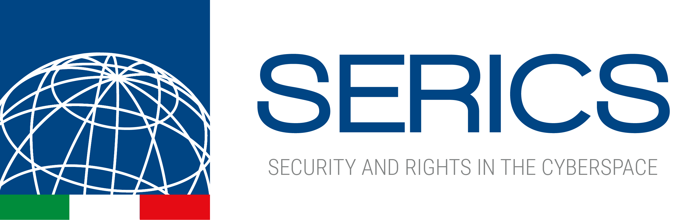
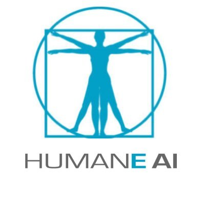

|
I was a short-term scholar at Boise State University, Boise, ID.
Program period: 17th July, 2022 - 31st December, 2022.
Boise is a beautiful city where each person is very friendly. There are a lot of parks for relaxing.
What do you do for fun? Hiking!
|
|
Journals
- Transactions on Knowledge and Data Engineering (TKDE)
- Journal of Intelligent Information Systems (JIIS)
- Engineering Applications of Artificial Intelligence (EAAI)
- Knowledge and Information Systems (KAIS)
- Data Mining and Knowledge Discovery (DAMI)
- Financial Innovation (FINI)
- International Journal of Geographical Information Science (IJGIS)
Conferences/Workshops
- IEEE International Conference on Data Mining (ICDM)
- European Conference on Machine Learning and Principles and Practice of Knowledge Discovery in
Databases (ECML/PKDD)
- ACM/SIGAPP Symposium on Applied Computing (SAC)
- ACM Workshop on Information Hiding and Multimedia Security (IHMMSec)
- IEEE International Conference on Machine Learning and Applications (ICMLA)
- European Conference on Machine Learning and Principles and Practice of Knowledge Discovery in
Databases – Workshop on New Frontiers in Mining Complex Patterns (ECML/PKDD - NFMCP)
- Pacific-Asia Conference on Knowledge Discovery and Data Mining (PAKDD)
- The Web Conference
- Italian Conference on Cybersecurity (ITASEC)
- Italian Symposium on Advanced Database Systems (SEBD)
- International Conference on Process Mining (ICPM) - Workshop: Leveraging Machine learning in Process Mining
|
|

|
Currently, I am a fixed-term researcher at the ICAR-CNR. I was employed to carry out scientific-technological research activities within the PNRR Project SERICS - SEcurity and RIghts In the CyberSpace.
|
|

|
I have been involved on the micro-project “Human Behavior is a matter of Time! Modeling Events Interactions through Temporal Processes”
that is part of EU H2020 ICT48 project Humane-AI-Net. The goal of the micro-project is to investigate methods for learning probabilistic model for event sequences.
From the study of those models, we want to provide an overview of the current advances as well as a repository of available datasets that can be exploited for research and study.
[Slides ] [Paper ] [Microproject ]
|
|
|
In 2022, I have been involved on the project CyberSecurity4Europe to produce the technical report
"Generative methods for out-of-distribution prediction and applications for threat detection and analysis".
The technical report wants to provide an overview on some recent Deep Learning based methods and techniques
for outlier detection and generation, and the main application scenarios in cybersecurity domain in which these
approaches can be effectively adopted.
[Paper ]
|
|
|
In 2019, I have been involved on the project SON-SecureOpenNets:Distributed Ledgers for Secure Open Communities that is part of
the MIUR - PON Research and Innovation 2014-2020. The goal was to study new methodologies, techniques and software solutions
capable of playing an enabling role for Blockchain technologies in the application contexts of privacy,
sharing economy and digital rights. The activity carried out focused on the study of the specifications of
the currently most used blockchain technologies
and the main intelligent platforms for defining machine learning models.
Furthermore, in collaboration with my collegues of the ICAR-CNR,
I have defined autoencoder-based models to detect attacks on the blockchain (as case study we test
our framework on the Etherium Classic Network).
[Technical Report]
|
|
|
|